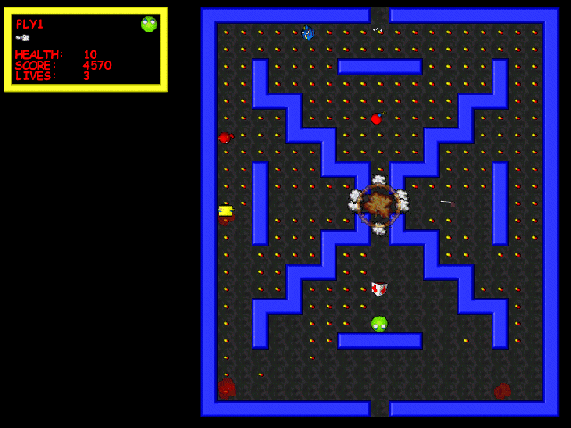

Here you can always download the latest version of Capman.
Current version: 1.01 - 2.77Mb, Updated 4.7.1999
NOTE! Capman package does NOT include needed DirectX drivers. Download newest DirectX drivers from: www.microsoft.com/directx/
Capman101.zip
Capman is second release in the Capsule serie of games, written by Jani Immonen. Object in Capman is to collect capsules to advance to next level.
As many other games, Capman is at it's best playing against other people. Capman has two different game modes, Deathmatch and Eatmatch, which can include up to four players, locally (max. two on one machine), via IPX/SPX, TCP/IP, modem or null modem cable.
Minimum requirements:Here is a screenshot from the game;
